Снятие
Поддев боковую облицовочную панель по ее краю, снять левую боковую облицовочную панель
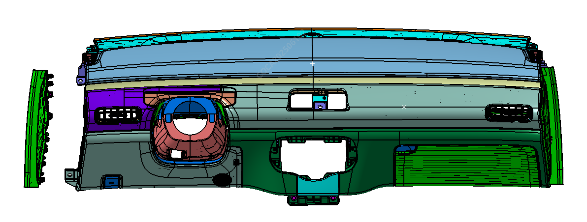
Поддев боковую облицовочную панель по ее краю, снять правую боковую облицовочную панель
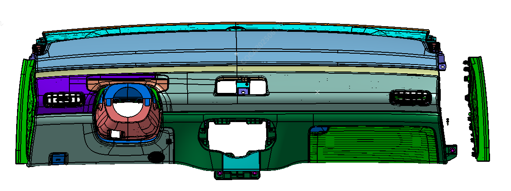
Снять узел нижней защитной панели со стороны водителя
Выкрутить 2 крепежных винта и 1 болт узла нижней защитной панели со стороны водителя
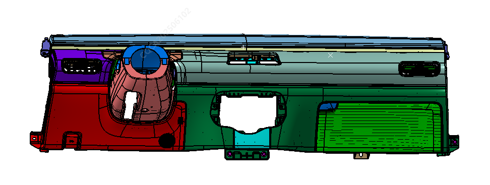
Снять узел нижней защитной панели со стороны водителя, а также отсоединить электрический разъем жгута проводов технологического лючка и трос ручки капота
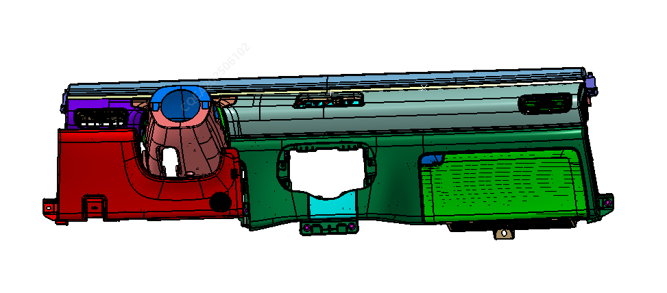
Отогнуть элемент облицовки по краю узла верхней кожухи замка рулевой колонки и снять узел верхней кожухи замка рулевой колонки
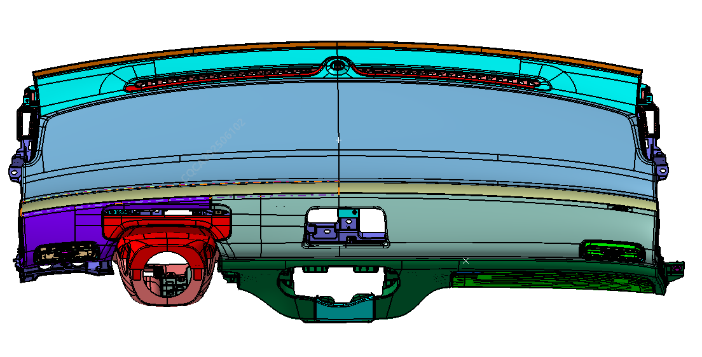
Выкрутить 3 винта крепления узла нижней кожухи замка рулевой колонки и снять узел нижней кожухи замка рулевой колонки
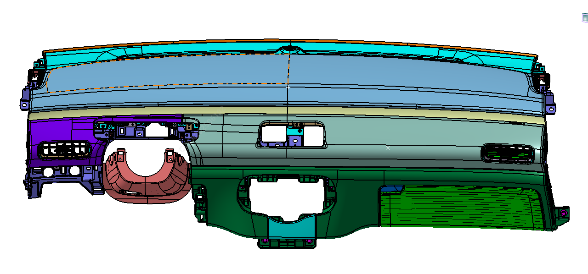
Выкрутить 5 винтов крепления узла I левой декоративной панели и снять узел I левой декоративной панели
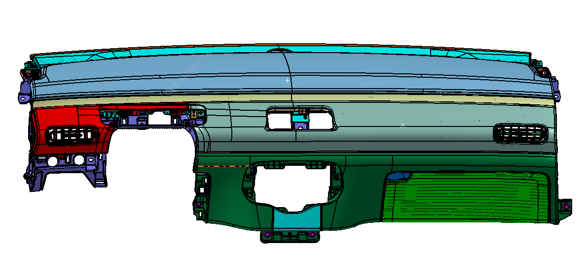
Выкрутить 4 винта крепления узла I правой декоративной панели, снять узел I правой декоративной панели и узел II левой декоративной панели
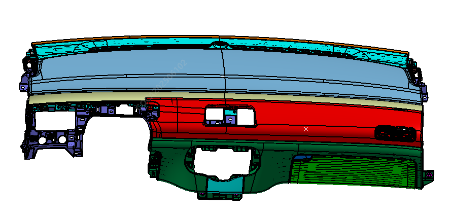
Выкрутить 5 винтов и 2 болта крепления узла перчаточного ящика и снять перчаточный ящик
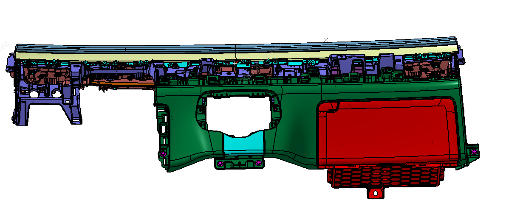
Отогнуть нижнюю центральную облицовочную панель панели приборов по ее краю и снять нижнюю центральную облицовочную панель панели приборов
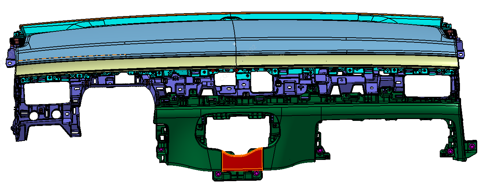
Выкрутить 12 болтов крепления узла панели приборов и снять узел панели приборов
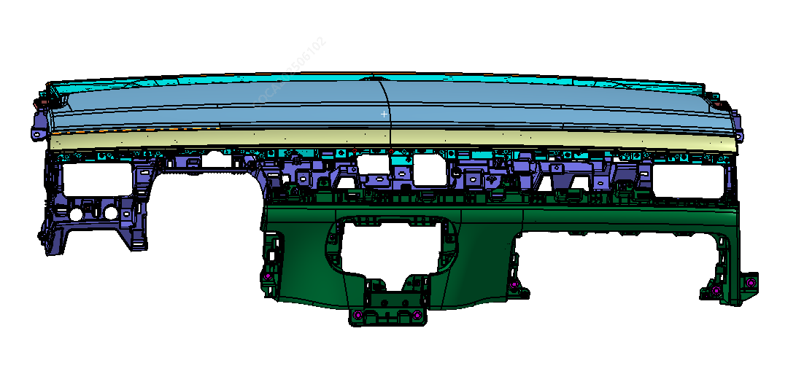
Установка
Выполнить установку в порядке, обратном снятию
Перед установкой проверить каждую деталь на предмет ухудшения свойств или повреждений, при обнаружении дефектов заменить ее. Обратить внимание на точность подключения внутренних жгутов проводов.